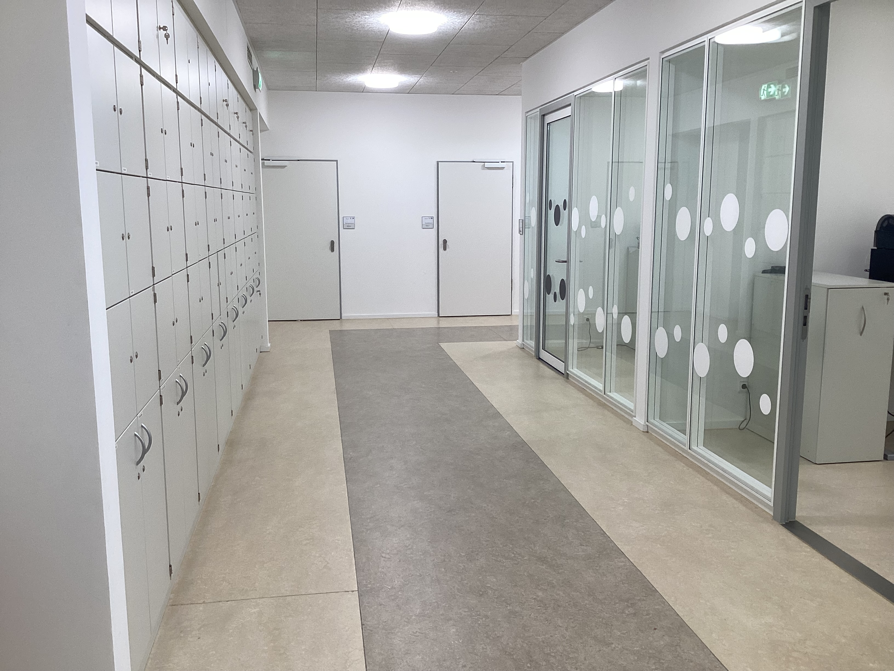
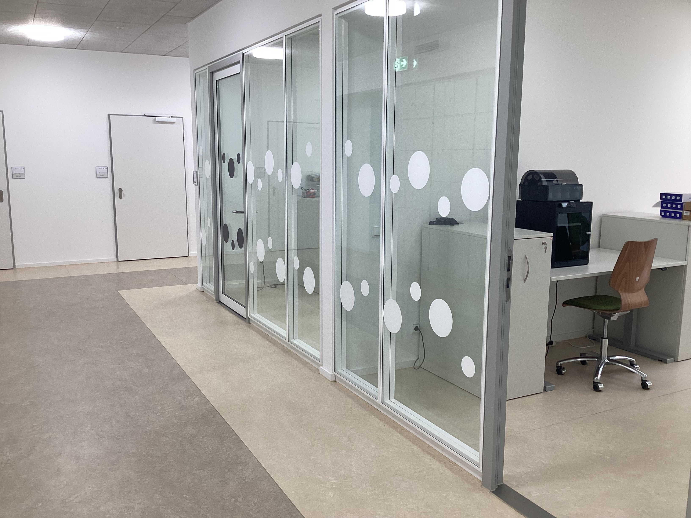
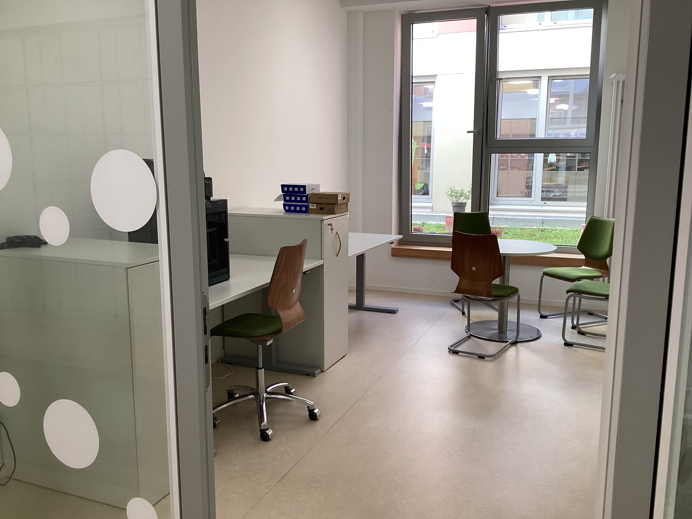
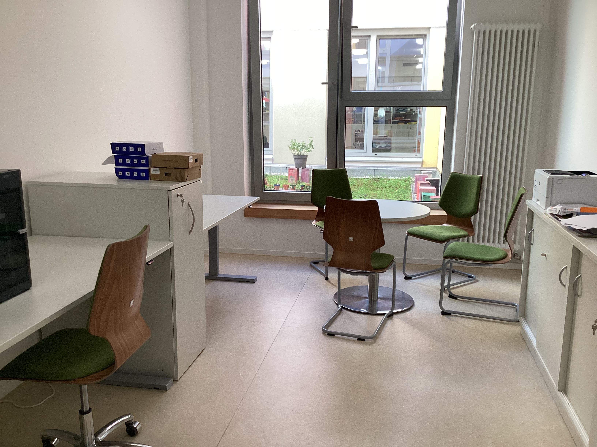
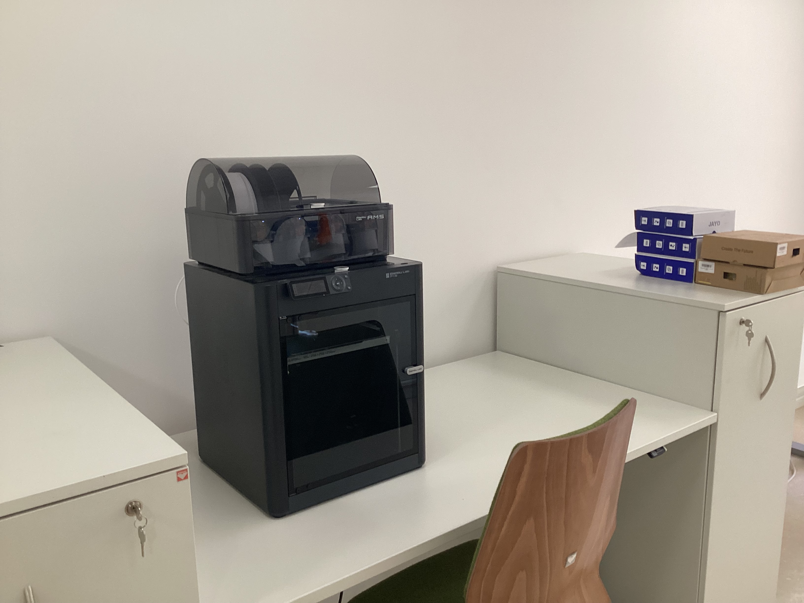
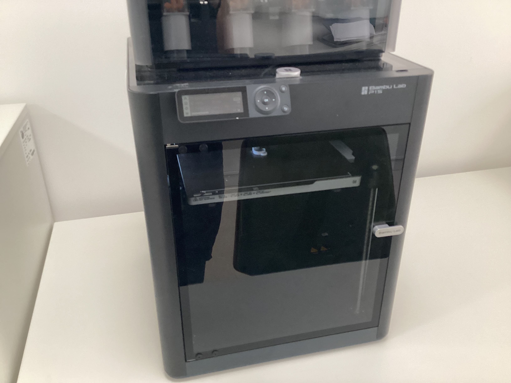

05 / S-Kamerafahrt
Sechs Fotos.
Eine Bewegung.
Die Kamera folgt einem weichen S-Pfad. Zwischen den Fotos läuft ein kontinuierlicher Cross-Fade.






05 / S-Kamerafahrt
Die Kamera folgt einem weichen S-Pfad. Zwischen den Fotos läuft ein kontinuierlicher Cross-Fade.